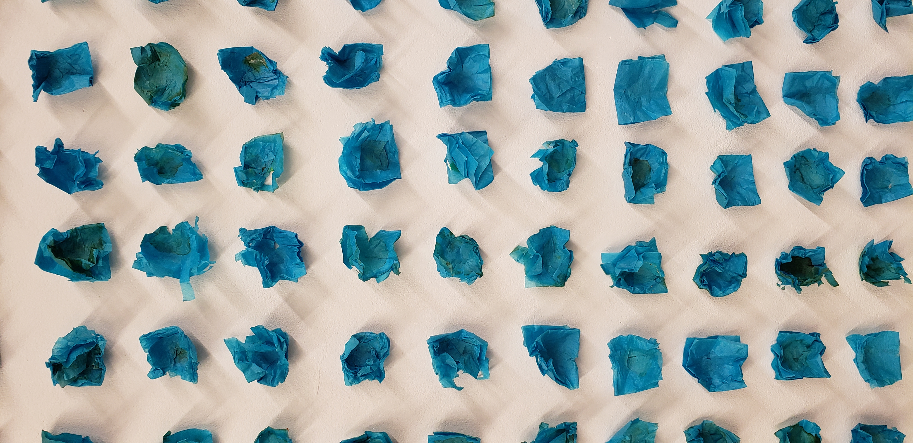
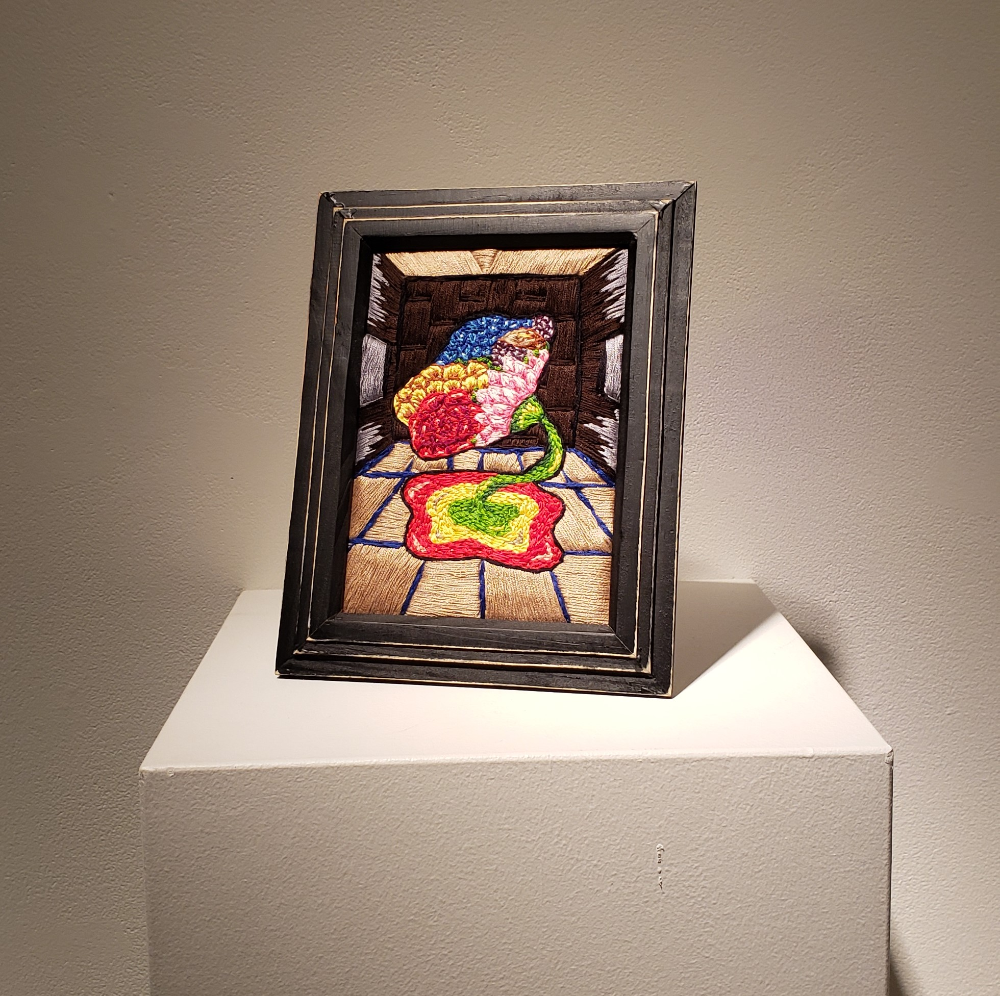

.jpg)
Alive memories, happy places.
Exploring the words nature, food, leaves and memories, this installation search to produce a feeling of comfort. I took a material that represents for me a part of the culture of my country, Mexico. Use to prepare meals that helps to construct memories, the corn husks hold by themselves the piece.
The article by Ursula K.Le Guin, The Carrier Bag Theory of Fiction, was for me an immersive text in which I could travel into my souvenirs. I remembered the tropic nature of my country and the humble live style that is forgotten in our modern society. That is basically how I interpreted the text.

Out of season
Out of season honors the reset of millions of immigrants. We may choose to move from our country or not, but when we do, we experience a lap of adaptation time. After that, we are ready to reset. The culture of our country defines a part of ourselves. I based my artistic work mainly on the Mexican culture because it is my native country, but also on the culture from Quebec, my host country. Share is a keyword in my work, I want to share my experiences, the mixture of cultures, and with the process, discover the effects of living more than one culture. The avocado seeds represent myself and my mexicaness, the ice refers to the cold weather that is associated with Quebec. I also use cut paper as a base for my ice cubes. “Papel Picado” and it is a decorative paper used in national festivities, day of the death, and others. Usually, it is very colorful, but for this project, I decided to use only blue, because, for me, Quebec is blue: lakes, flag, snow, people. This way I also make I small reference to the mixture of cultures. With time, the place we live in leave a mark in ourselves and it is not necessarily negative.

Identity scenario, embroidery no1
A flower that grows different types of petals, like a person that adopt traditions from two cultures.
The room represents the individual and the flower the mixture of cultures living inside of it.
Changing with the exterior, the mixture of cultures takes place.
The memory… the souvenir aspect.
It’s about sharing experiences. Connecting by having the same experiences, similar ones or knowing someone that does.
Painterly, as an artistic presentation. Dealing between the limits of domestic and art.
The homely makes it more intimate.